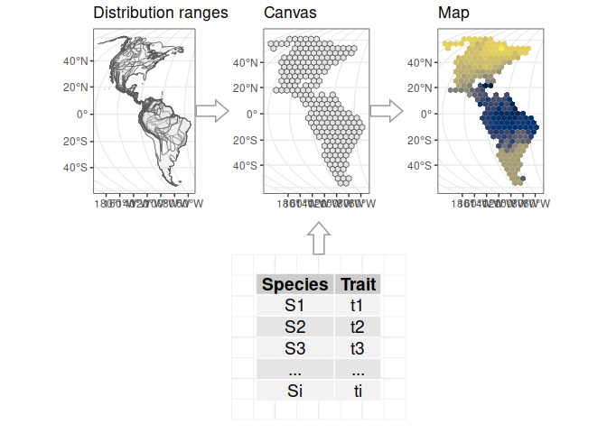

A framework for the study of macroecological patterns of life-history traits.
rangeMapper builds upon three types of data:
-
Species distribution ranges
-
Life-history datasets
- Environmental rasters
rangeMapper is build on three concepts:
-
The canvas which is a regular grid of squares or hexagons.
-
The subsets which are defined by combinations of life-history datasets and map data.
- The maps representing one or several variables summarised on the canvas.

File format
rangeMapper’s project containers are sqlite files.
Installation
# Install release version from CRAN
install.packages("rangeMapper")
# Install development version from GitHub
remotes::install_github("rangeMapper")